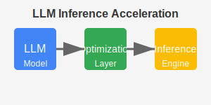
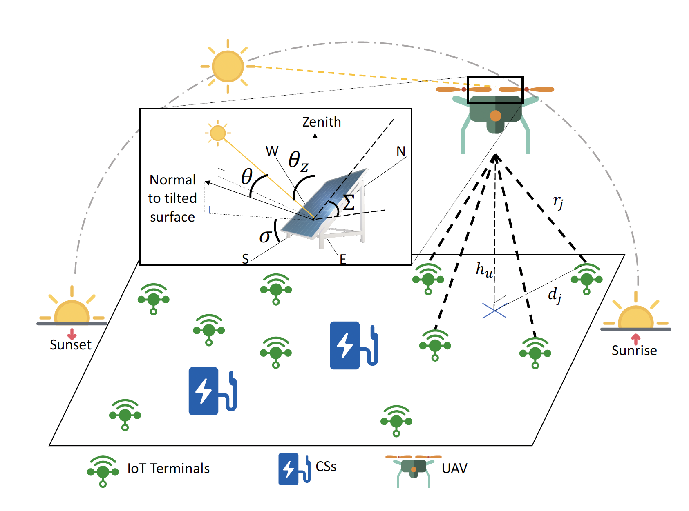
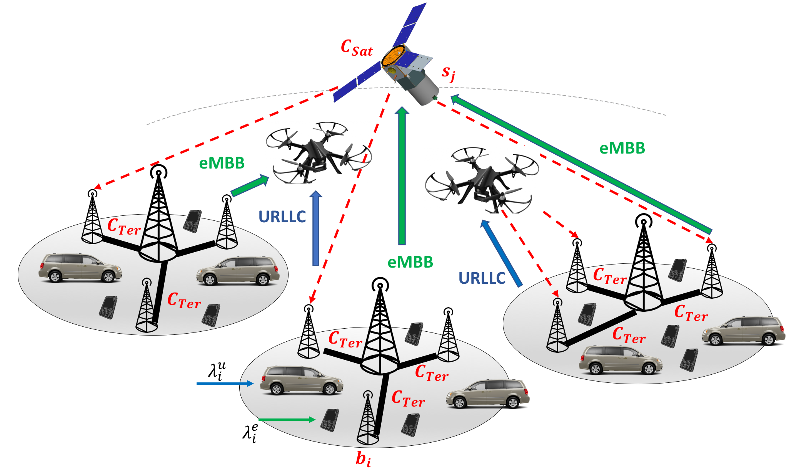

Research & Projects
Current Projects
LLM Inference Acceleration

Developing novel techniques to optimize inference performance of large language models on both cloud and edge devices, with a focus on reducing latency and memory footprint while maintaining model quality.
Multi-AZ/Region Distributed Learning
Creating scalable frameworks for training large models across geographically distributed data centers, addressing challenges in synchronization, communication efficiency, and fault tolerance. View on GitHub.
Federated Meta-Learning for Edge Intelligence

Designing federated learning systems that leverage meta-learning to enable rapid adaptation to new tasks and environments at the network edge, with applications in IoT and smart city scenarios.
Previous Research
Energy-Efficient UAV-Assisted IoT Networks

Developed optimization algorithms for UAV trajectory planning to maximize energy efficiency in IoT networks, resulting in one of the fifty most popular papers of IEEE Transactions on Mobile Computing. View on GitHub.
Space-Air-Ground Integrated Networks

Proposed heterogeneous traffic offloading strategies for next-generation integrated networks, improving resource utilization and service quality. View on GitHub.
Feel free to contact me for collaboration opportunities or more information about my research.